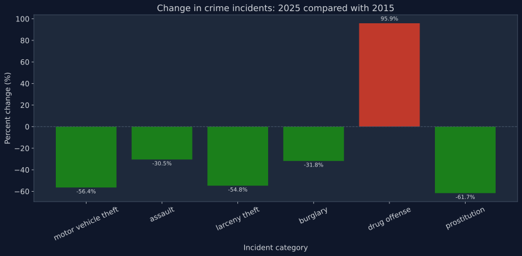

The city of San Francisco delivers key information data about the city through the open data portal, DataSF. Here, you can find datasets with information about the city, including the police reports. The police reports are collected in two datasets called: 'Police Department Incident Reports: Historical 2003 to May 2018', and 'Police Department Incident Reports: 2018 to Present'. In combination they show every reported crime since 1st of January 2003 and all the way up to the present date. The two crime datasets are not aligned with each other, but contain much of the same information, however, some names and crimes are reported differently. Therefore, they cannot be compared unless they are cleaned and harmonized. For this article, we have harmonized a prioritized focus crime dataset, constructed from the Police Department found on the DataSF. This means that some variables have been merged and renamed to capture the essence of the crime scenes they represent in the original datasets. However, some data were filtered afterwards because they contain no information, or contribute very vaguely to the understanding of the story this article is telling, i.e., only prioritized details are visualized. In our prioritized focus crime dataset we included five harmonized variables; incident_category, filtered to contain only 6 reported categories; motor vehicle theft, assault, larceny theft, burglary, drug offense, prostitution. The incident_description variable was used to filter for the word marijuana. Two GPS variables, longitude and latitude, were used to locate drug offence incidents on a map. Lastly, a timestamp variable was used to filter a selection of years, namely 2015 to 2025. The full San Francisco Data can be found here
San Francisco is part of a heartwarming turn for the better in California. It has a positive downward-going curve in crime statistics. In 2025, the city could report an overall 22% decline in violence crimes. Homicide incidents have decreased by 45%, and robbery decreased by 40% since 2019. Looking at police reports that are available back to 2003, the average number of police reporting has never been lower. So why are police reports on drug offenses increasing terrifyingly?

Of the six crime types that this article centers on, it is seen in figure 1 that only drug offense has an increased number of reports in the last 10 years. However, the difference is clear. While the crime types we are comparing trends with have decreased between 30% and approximately 62%, drug offense has had an alarming jump of more than 95% in the statistics in a decade. This was not an expected increase following the legalization of marijuana. Early studies even showed a positive effect from the legalization on the use of hard drugs. Something else must be going on.
In 2016 the state of California legalized marijuana with Proposition 64 after 5 years of decriminalization. The thought was that it would be reasonable to expect a significant fall in the reporting of drug offenses in the city of San Francisco as a result of the legalization. The research of positive effect, including the criminal record, seemed to be evident. But, the numbers are telling a different story, unfortunately. Whether the increase in numbers of reported drug offenses is a consequence of the legalization is, however, an ongoing debate and ground for research.
On November 8th 2015, California legalized Marijuana with the Adult Use of Marijuana Act (AUMA), also known as proposition 64. This meant that it became legal to possess up to 28.5 grams of marijuana, or up to 5 grams of concentrated cannabis for adults over 21 years old.
In the time map in figure 2 above, the green dots represent the reported incidents of drug offenses in the period from 2015 to 2025 where marijuana was involved. The map also shows red dots that represent the GPS coordinates where the reported drug offenses were other than marijuana offenses. Running the timemap, a clear pattern shows with fewer and fewer drug offenses where marijuana was involved. However, it is clear that there is an increase in the reported drug offenses where other drugs are involved. Furthermore, it looks like a lot of the drug-related activity is concentrated more distinctly around fewer areas of the city.
In figure 3 below, it is seen how the reported drug offenses changed over the last decade. The plot contains three visualizations for easy comparison. It contains a line graph that is showing the total number of reported drug offense incidents and a line graph that shows the number of reports where marijuana is involved. The third graph shows the change in reported drug offenses year by year.
Fentanyl is a designer drug that was invented in the 1960s. The addictive drug has become very popular since 2013. It is up to 100 times or more potent than morphine and related plant-based opioids. Fentanyl is produced entirely in laboratories without plant-based components. 1 kilo of Fentanyl can kill 500,000 people. More about Fentanyl
The drug offense incidents increased by approximately 196%, from 1,849 to 3,614, in only 10 years. While the number of marijuana related reports declined from 23.3% to 0.86% over the last decade, something different must have happened with harder drugs. It is seen that the evolution in incidents shows a percentage decrease in the years 2019, 2020, and 2021. Taking the COVID-19 pandemic into consideration, this drop is assumed to be a reasonable percentage-wise decline for that period. To find a cause for the increase, the impact of other factors on drug trends should be probed. Around 2013 a severe designer drug epidemic overflowed the state of California, known as the fentanyl epidemic. Fentanyl is cheap to produce, but with a much higher risk of an accidental overdose to the users, as even a very small dose of 2 mg is considered a lethal dose. A legalization of fentanyl will, probably, not have the same positive effect on police reports as it was seen with marijuana. However, something has to be done about the rising problem, and many are concerned on behalf of the city. The epidemic had by 2025 cost the lives of 3000 people in San Francisco in one decade, but overdose-related deaths are reported to be declining. One of Mayor Daniels Lurie's current strategies to continue a decline in overdose deaths is widespread arrests for drug possession. The increase in arrests produces more police reports and this might be the foundation for the increase in drug offenses that was found in the prioritized focus crime dataset, used for this article. The true effect of the strategies and healing of San Francisco, we will have to wait for.